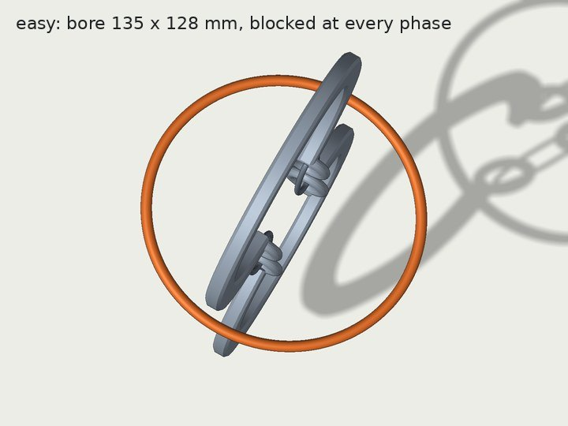
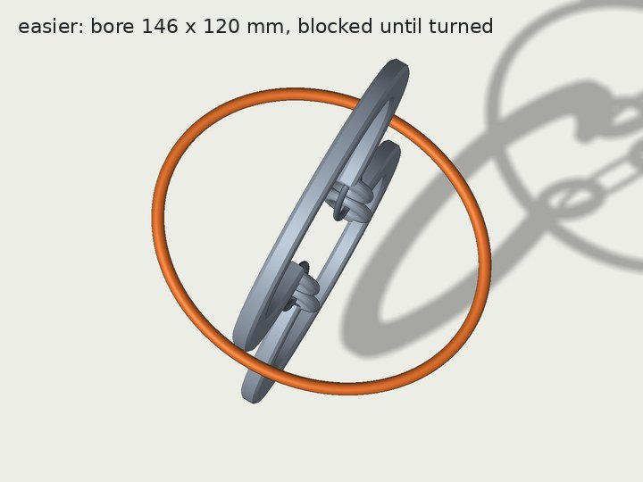
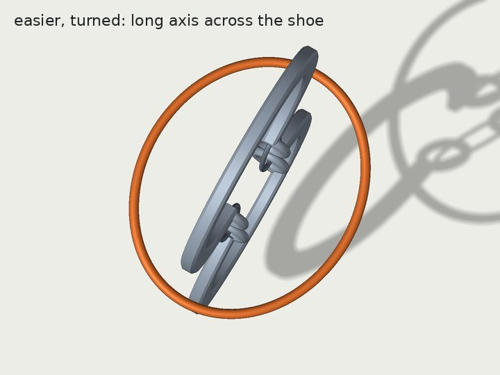
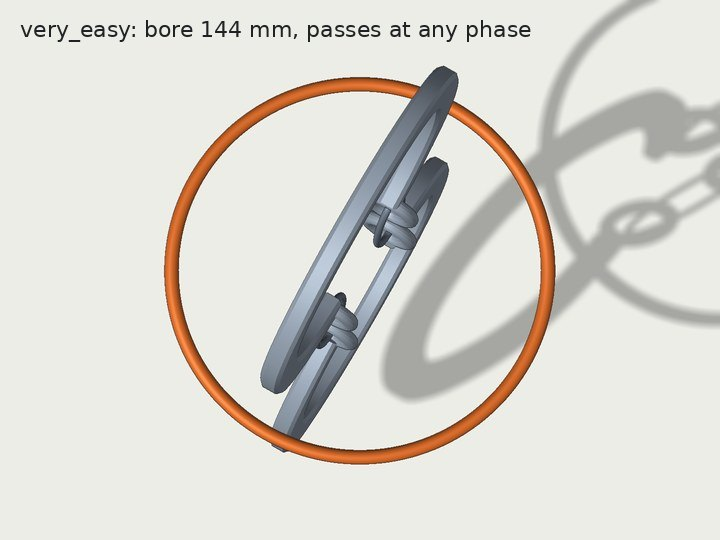

在 easy 之下再加两档
刺球出笼、马蹄环、长孔立柱解环三个任务，各加 very_easy 和 easier 两档。每个任务分四部分写：两档怎么设计、是否验证过可解、真实几何的渲染、怎么实现和代码结构。
总览
三个任务用同一种做法：部件不变，每个任务只留一个难度旋钮，very_easy 和 easier 只差这个旋钮的取值。切换难度只需换 variation_id。
| 任务 | very_easy | easier | 难度旋钮 | 状态 |
|---|---|---|---|---|
| 刺球 | 不转，直接平移拉出笼 | 绕所夹的刺转一下，再平移拉出 | 朝向机器人的窗宽 | 已实现并验证 笼条分布待改 |
| 马蹄环 | 圆环比马蹄宽，沿链拉出，转不转都能过 | 椭圆环，先转到长轴横跨马蹄，再沿链拉出 | 环孔尺寸 | 方案 已做截面检查 |
| 长孔立柱 | 从定式 s4 之后开局：只剩珠 2 穿过环一步 | 从定式 s3 之后开局：环侧立穿过长孔，再让珠 2 穿过环 | 开局状态（绳的走向） | 方案 |
刺球
1. 两档的设计
定义 你的决定
- very_easy：按初始朝向直接平移拉出来，全程不转。
- easier：直接拉拉不出来；在一次抓持内转一下（角度不限），再平移拉出来。
实现 我的方案
- 刺球沿用 easy 的 CLASSIC 刺球（10 根刺，球核直径 54 mm），两档的初始位姿也相同。
- 夹爪在笼外夹住一根朝向机器人、伸出笼壁 19.5 mm 的 60 mm 长刺；easier 的“转一下”就是绕这根刺的轴转手腕。
- 两档只差朝向机器人那个窗的宽度：very_easy 116 mm，easier 106 mm。
为什么两档的出口窗都正对机器人。这是有意的。夹爪夹着朝向机器人的那根刺，所以刺球只能朝机器人方向拉出来；出口如果在别的方向，就要先在笼里把球挪到那个窗口，需要换抓或多步操作，那是 easy 及以上的内容。所以两档都是出口正对、路线最短，区别只在出口够不够宽：够宽就直接拉，不够宽就先转一下。
2. 笼条太稀疏：现状与改法 待你决定
现状 你说得对。现在的 very_easy 只剩背面 2 根笼条：116 mm 的窗在 117 mm 内径的笼上占了 165° 圆周，和左右两个窗连成一片，开口一共 273°。easier 有 4 根，只缺正对机器人的那根。
原因 要直接平移出笼，出口宽度至少约 102 mm（窗宽搜索里 100 mm 时一个能直拉的朝向都没有）。在 117 mm 内径的笼上，这样的窗至少占 121° 圆周。如果 3 根笼条均匀分布，每个窗最宽只有 101 mm。所以保持现在的直径，做不出均匀的笼条。
方案（推荐） 笼内径从 117 mm 改为约 150 mm，开三个等宽窗，笼条在 0°、120°、240°，其中一个窗正对机器人。旋钮仍然是窗宽（三个窗同宽），刺球不变。代价是要重做位姿搜索、落稳、夹爪检查、稳健性检查、渲染和测试，约 1–2 小时。笼子变大后，刺球要靠前放，才能有刺伸出笼外供夹爪夹持。
备选 保持直径，前后各开一个大窗，左右两根笼条。very_easy 的笼条只有 15°，看上去像两根立柱，不推荐。
3. 可解性验证（现在的设计）
| 检查 | very_easy（116 mm） | easier（106 mm） | 方法 |
|---|---|---|---|
| 初始位姿与笼、底座、桌面不相交 | 是 | 是 | 精确网格 |
| 保持初始朝向能否平移出笼 | 能 | 不能 | 2 mm 平移网格上的广度优先搜索 |
| 证明过的路径（只算刺球） | 抬 5 mm → 朝 172° 直拉 | 抬 15 mm → 绕刺轴转 75° → 朝 174° 直拉 | RigidPathChecker 逐段证明，表面余量 ≥ 1 mm |
| 加 2F-85 夹住那根刺 | 160 个方向中 10–11 个能直拉 | 直拉 0/160；先抬 15 mm 再转约 70° 后能拉出 | 另一个 session 的 exit_check.py（提交 5d5a67b） |
| 初始位姿扰动（±1 mm、±2°，20 个样本） | 20/20 仍能平移出笼 | 20/20 仍出不去 | 同上平移搜索 |
| CPU 物理仿真里再放 3 s | 移动 0.30 mm | 移动 0.30 mm | Genesis CPU，机器人保持 home |
未做：机器人从 home 出发的完整执行（含 Panda 手腕、IK、动力学）。
4. 渲染（现在的设计）


5. 实现与代码结构
topogym/tasks/hedgehog_in_cage/ below_easy.py # 两档共用：笼子构造、落稳位姿；cage(窗宽 mm) 是唯一旋钮 hedgehog_in_cage_very_easy.py # 一行：cage(116.) hedgehog_in_cage_easier.py # 一行：cage(106.) topogym/config/variation_records.py # 登记两档，别名 very_easy / easier topogym/planning/hedgehog_in_cage/below_easy_witness.py # 平移可达、证明路径、CPU 落稳 ci_checks/test-hedgehog-below-easy.py # 7 项测试，约 40 s，不需要 GPU env = topogym.make("hedgehog_in_cage", variation_id="very_easy") # 或 "easier"、"easy"、"medium"、"hard"
思路：先在几何上搜索满足“一根刺朝机器人伸出笼外”的静置朝向，按“能否平移出笼”和“绕所夹的刺转一次能否出笼”分类；候选再放进 Genesis 落稳后重新分类，最后加夹爪复核。easy 的生成器和 common.py 没有改动（easy 的可解性记录按 SHA-256 锁定了这两个文件）。
马蹄环
1. 两档的设计 按你的意见修订
任务定义不改。你说得对：两只手一只拿马蹄、一只拿环，关键是环和马蹄的相对关系，环落稳时平躺不影响。上次我把“只平移”套在了桌上的初始姿态上，所以得出要改任务定义（环不缠绕）的结论，这个结论撤回。环仍然同时套着两条链，部件不变，只改环孔大小。
原理。一只手把马蹄提起来，让链竖直，环沿链方向滑过下面那只马蹄就脱出。沿链方向看，马蹄是一根 138 × 25 mm 的长条（含端部小环），环孔要能把这根长条套进去。
| 档 | 环孔 | 能套过马蹄的环相位 | 机器人要做的 |
|---|---|---|---|
| easy（现有） | 135 × 128 mm 椭圆 | 0（无论怎么转都过不去） | 要用折合两只马蹄的技巧 |
| easier | 146 × 120 mm 椭圆 | 180° 中约 54° | 提起马蹄，绕链方向转环，让长轴横跨马蹄，再沿链拉出 |
| very_easy | 144 mm 圆 | 全部（居中时每边余量约 3 mm） | 提起马蹄，沿链拉出；环也可能自己掉下来 |
“环相位”指环绕链方向转过的角度，每 2° 取一个，共 90 个。旋钮是环孔的长短轴，和刺球的窗宽一样。
2. 可解性验证
- 已做 截面检查（上表）：只看几何，马蹄和环在装配姿态，未含动力学。放大后的环在装配姿态下仍同时套着两条链（生成器的拓扑检查通过）。
- 未做 CPU 落稳：环放大后是否仍搭在马蹄上、不在开局时自己滑脱。刚体，不需要 GPU。
- 未做 相对路径证明：马蹄固定，证明环的路径（very_easy 只平移；easier 先转一次再平移）。
- 未做 机器人执行。
3. 渲染




4. 实现计划与代码结构 计划
topogym/tasks/horseshoe_ring/ below_easy.py # 共享构造；ring(长轴 mm, 短轴 mm) 是唯一旋钮 horseshoe_ring_very_easy.py # 一行：ring(144., 144.) horseshoe_ring_easier.py # 一行：ring(146., 120.) topogym/planning/horseshoe_ring/below_easy_witness.py # 截面检查、相对路径证明、CPU 落稳 ci_checks/test-horseshoe-below-easy.py
结构和刺球一样。马蹄、链、两只马蹄的落稳布局沿用 easy；新的环要重新落稳，得到开局位姿。
长孔立柱
1. 两档的设计
你的提议 从 s3 之后、s4 之前开局。我的评估 同意，作为 easier：还剩 2 步，先把环侧立穿过长孔（20 mm 粗的环管过 28 mm 宽的长孔，一次明确的转动），再让珠 2 穿过环。正好对应计划里的“抓住后调整一次角度再取出”。
建议 very_easy 从 s4 之后开局：只剩“珠 2 穿过环”一步，环顺着绳圈滑过珠 2 就脱出，不用转。两档都取自同一个定式解法，只改绳的走向、长度和环的初始位置，不加部件。你之前提的“环在绳上面”也能当 very_easy，但环要搭在绳尾上，或者绳不穿长孔，和其他档的结构差别更大。
| 状态 | 这一步的动作 | 绳依次穿过（chain） | 用作 |
|---|---|---|---|
| S0 | 初态 | [S1⁺, H⁺, S2⁺] | easy / medium / hard |
| s1 | 端盘 2 一侧反穿长孔 | [S1⁺, H⁺, S2⁺, H⁻] | |
| s2 | 环沿立柱越过柱顶 | [S1⁺, R⁻, H⁺, R⁺, R⁻, S2⁺, R⁺, H⁻] | |
| s3 | 珠 2 穿过环 | [S1⁺, R⁻, H⁺, S2⁺, H⁻, R⁺] | easier 的开局 |
| s4 | 环侧立穿过长孔 | [S1⁺, H⁺, R⁻, S2⁺, R⁺, H⁻] | very_easy 的开局 |
| s5 | 珠 2 再穿过环，环孔 R 不再出现 | [S1⁺, H⁺, S2⁺, H⁻] | 解开 |
H 是立柱上的长孔，R 是环孔，S1、S2 是两颗珠的孔；chain 列出绳从一端到另一端依次穿过的孔和方向（Cabalar 与 Santos，Fisherman's Folly，Figure 4）。
2. 可解性验证
- 未做 构造开局：写出 s3、s4 两种绳的走向（绳要两次穿过长孔，可能要加长），环放在对应位置。
- 未做 拓扑检查：从落稳后的绳中心线算出 chain，确认确实是 s3 / s4。
- 未做 GPU 上的 FEM 落稳：确认开局稳定。s4 的绳圈如果竖直悬着，环可能自己滑过珠 2 掉下来，所以绳圈要平放在底座上。GPU 现在空闲。
- 未做 机器人执行。
3. 渲染

4. 实现计划与代码结构 计划
topogym/tasks/slotted_post_ring/ below_easy.py # 共享构造；开局状态（绳的控制点 + 环的位姿）是唯一旋钮 slotted_post_ring_very_easy.py # 一行：开局 = s4 slotted_post_ring_easier.py # 一行：开局 = s3 topogym/planning/slotted_post_ring/below_easy_witness.py # 从绳中心线算 chain、FEM 落稳检查（GPU） ci_checks/test-slotted-below-easy.py # 登记与 chain 检查（不需要 GPU）
Harbor 打包：同一个框架下的参数
是的，新难度就是同一个任务的参数，没有单独的框架。仓库分三层：
- 任务源码
topogym/tasks/<任务>/：一个任务，每档一个类，共用common.py。新两档也在这里。 - 登记
variation_records.py：每档一个variation_id和别名，topogym.make(任务, variation_id=...)选档。新两档已经登记（刺球）。 - Harbor 任务包 根目录
tasks/<slug>/：从某一档、某个 seed 生成的冻结实例，包含instance.json、资源、评分脚本和 docker 配置。现有的 easy / medium / hard 也是每档各一个包，每个包分 privileged 和 standard 两种模式，例如topogym-hedgehog-in-cage-easy-i00-privileged。
新难度不需要新的代码路径。打包就是用现有的 scripts/topogym_mk_task.py hedgehog_in_cage --variation very_easy --scene-seed 0 再生成一份包，[metadata].difficulty 会自动取登记里的 very_easy / easier。我之前说的“还没做”只是指这几个冻结包还没生成：生成时要在 GPU 的 docker 里跑 make-instance，镜像里也要有新代码。
待你决定
- 刺球笼子：改成内径约 150 mm、3 根均匀笼条（推荐），还是保持现状？
- 马蹄环：按环孔大小分档（very_easy 144 mm 圆环，easier 146 × 120 mm 椭圆环）可以吗？
- 长孔立柱：easier 用 s3 之后（你的提议）；very_easy 用 s4 之后（推荐），还是“环在绳上面”？
确认后的顺序：刺球改笼子 → 马蹄环（CPU 即可）→ 长孔立柱（趁 GPU 空闲做 FEM 落稳）。
背景
计划原文
very_easy：主要考察机械臂找合适角度接近、抓住目标物、取出并搬运的能力，尽量减少抓取后的解谜操作。
easier：在上述基础上增加少量约束，让机械臂抓住物体后需要调整角度或方向，再完成取出和搬运；整体仍比当前 easy 简单。


| 任务 | 网上的定式解法 | 机器人完整执行（仓库） |
|---|---|---|
| 刺球 | RADEMIC 提示：CLASSIC 找最宽的孔和两根最短的刺 | easy、medium 已完成（2026-09-30）；hard 未完成 |
| 马蹄环 | 一只马蹄翻过来与另一只成直角，环从 U 形底部滑出 | 当前三档没有 |
| 长孔立柱 | Fisherman's Folly 5 步（见上表） | 没有 |
来源：RADEMIC、Wayne's Word、Cabalar 与 Santos。渲染图由仓库生成器的网格在 CPU 上渲染。